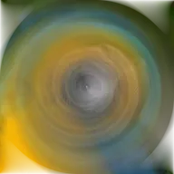

Вихревое размытие

Размывает слой вихрем вокруг Центра: сильнее всего в середине и затухая к Радиусу (доле экрана). Хроматическая аберрация разводит красный, зелёный и синий каналы вокруг Центрального канала.
Настройки
| Настройка | Тип | Диапазон | По умолчанию |
|---|---|---|---|
| Центр | Точка (X, Y) | от -1 до 2 | 0.5, 0.5 |
| Сила | Число | от 0 до 1 | 0.1 |
| Радиус | Число | от 0.01 до 3 | 0.3 |
| Хроматическая аберрация | Число | от 0 до 1 | 0 |
| Центральный канал | Выбор | Красный, Зелёный, Синий | Зелёный |